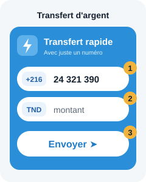

J'ai un codeلدي رمز
Essai gratuit de 30 joursتجربة مجانية لمدة 30 يومًا
Pass Ma voitureباقة سيارتك
- Jusqu'à 5 voitures : les échéances et les rappels de toute la famille, ajoutés à l'agenda en une seule fois
- Le carnet des dépenses : pleins, vidanges, réparations, pneus ; coût au kilomètre, consommation, export pour Excel
- 12 mois à partir de l'activation de votre code : la date de fin exacte est écrite dans le message qui vous donne le code
- Pas de compte ni d'application : un code d'accès à taper une fois ; vos dates restent dans votre téléphone
- Pas de renouvellement automatique : après 12 mois, votre première voiture et ses rappels restent gratuits
- إلى غاية 5 سيارات: مواعيد وتذكيرات كل العائلة، تُضاف إلى الرزنامة دفعة واحدة
- دفتر المصاريف: تعبئة الوقود، تغيير الزيت، الإصلاحات، العجلات؛ كلفة الكيلومتر، الاستهلاك، التصدير إلى Excel
- 12 شهرًا بداية من تفعيل رمزك: تاريخ النهاية بالضبط مكتوب في الرسالة التي تحمل الرمز
- دون حساب ولا تطبيق: رمز دخول تكتبه مرة واحدة؛ تبقى تواريخك في هاتفك
- لا تجديد آلي: بعد 12 شهرًا، تبقى سيارتك الأولى وتذكيراتها مجانية
Paiementالدفع
- Ouvrez l'application :افتح التطبيق:

Sur iPhone :على آيفون: D17 · IZI - Dans D17 : « Transfert d’argent » puis « Transfert rapide ». Dans IZI : « Transfert ». Tapez le numéroفي D17: « تحويل الأموال » ثم « التحويل السريع ». في IZI: « تحويل ». أدخل الرقم 24 321 390.
Montant :المبلغ: 9 DT (Pass Ma voiture, 12 mois)9 د (باقة سيارتك، 12 شهرًا)?

D17 
IZI - Motif :سبب الدفع: votre nom et votre téléphoneاسمك ورقم هاتفك. Puis envoyez la capture du paiement par WhatsApp (bouton vert).ثم أرسل لقطة الدفع عبر واتساب (الزر الأخضر).
Vous payez directement dans l'application officielle de La Poste Tunisienne (D17) ou de Zitouna Paiement (IZI) : nous ne voyons jamais vos codes.تدفع مباشرة في التطبيق الرسمي للبريد التونسي (D17) أو لزيتونة للدفع (IZI): لا نطّلع أبدًا على رموزك.
Payez avec pour motif votre nom et votre téléphone, puis envoyez la preuve par WhatsApp. Vous recevez votre code d'accès par WhatsApp, en général sous 24 heures.ادفع مع ذكر اسمك ورقم هاتفك كسبب للدفع، ثم أرسل الإثبات عبر واتساب. يصلك رمز الدخول عبر واتساب، عادة في غضون 24 ساعة.
Prix en dinars tunisiens. Voir lesالأسعار بالدينار التونسي. انظر conditions du Pass Ma voitureشروط باقة سيارتك.
Comment ça marche ?كيف يعمل؟
- Remplissez le formulaire ci-dessous (nom et téléphone WhatsApp).
- Payez 9 DT par D17 ou IZI et envoyez la preuve par WhatsApp.
- Vous recevez votre code d'accès par WhatsApp (en général sous 24 heures), avec l'heure de fin de votre Pass.
- Tapez ce code une seule fois dans « J'ai un code » : le Pass est actif sur ce téléphone pendant 12 mois.
- املأ الاستمارة أسفله (الاسم وهاتف واتساب).
- ادفع 9 د عبر D17 أو IZI وأرسل الإثبات عبر واتساب.
- يصلك رمز الدخول عبر واتساب (عادة في غضون 24 ساعة)، مع ساعة نهاية الباقة.
- اكتب الرمز مرة واحدة في «لدي رمز»: تُفعَّل الباقة على هذا الهاتف لمدة 12 شهرًا.
Demander mon Pass Ma voitureطلب باقة سيارتك
Merci, votre demande est bien reçueشكرًا، وصلنا طلبك
Payez maintenant 9 DT par D17 ou IZI, avec pour motif votre nom et votre téléphone, puis envoyez la preuve par WhatsApp. Vous recevrez votre code par WhatsApp, en général sous 24 heures.ادفع الآن 9 د عبر D17 أو IZI مع ذكر اسمك ورقم هاتفك، ثم أرسل الإثبات عبر واتساب. سيصلك الرمز عبر واتساب، عادة في غضون 24 ساعة.
- Ouvrez l'application :افتح التطبيق:
Sur iPhone :على آيفون: D17 · IZI - Dans D17 : « Transfert d’argent » puis « Transfert rapide ». Dans IZI : « Transfert ». Tapez le numéroفي D17: « تحويل الأموال » ثم « التحويل السريع ». في IZI: « تحويل ». أدخل الرقم 24 321 390.
Montant :المبلغ: 9 DT9 د?
D17 IZI - Motif :سبب الدفع: votre nom et votre téléphoneاسمك ورقم هاتفك. Puis envoyez la capture du paiement par WhatsApp (bouton vert).ثم أرسل لقطة الدفع عبر واتساب (الزر الأخضر).
Vous payez directement dans l'application officielle de La Poste Tunisienne (D17) ou de Zitouna Paiement (IZI) : nous ne voyons jamais vos codes.تدفع مباشرة في التطبيق الرسمي للبريد التونسي (D17) أو لزيتونة للدفع (IZI): لا نطّلع أبدًا على رموزك.
Pas de renouvellement automatique. Le Pass dure 12 mois à partir de l'activation du code. Quand vous avez le code, tapez-le plus haut dans « J'ai un code ».لا تجديد آلي. تدوم الباقة 12 شهرًا بداية من تفعيل الرمز. عندما يصلك الرمز، اكتبه أعلاه في «لدي رمز».
Sans Pass, le site reste utilisable sans inscription : tous les calculateurs, les échéances d'une voiture et leurs rappels dans l'agenda sont gratuits pour toujours. Les résultats sont indicatifs : ce site n'est pas un service officiel.دون باقة، يبقى الموقع متاحًا دون تسجيل: كل الحاسبات ومواعيد سيارة واحدة وتذكيراتها في الرزنامة مجانية دائمًا. النتائج تقريبية: هذا الموقع ليس خدمة رسمية.